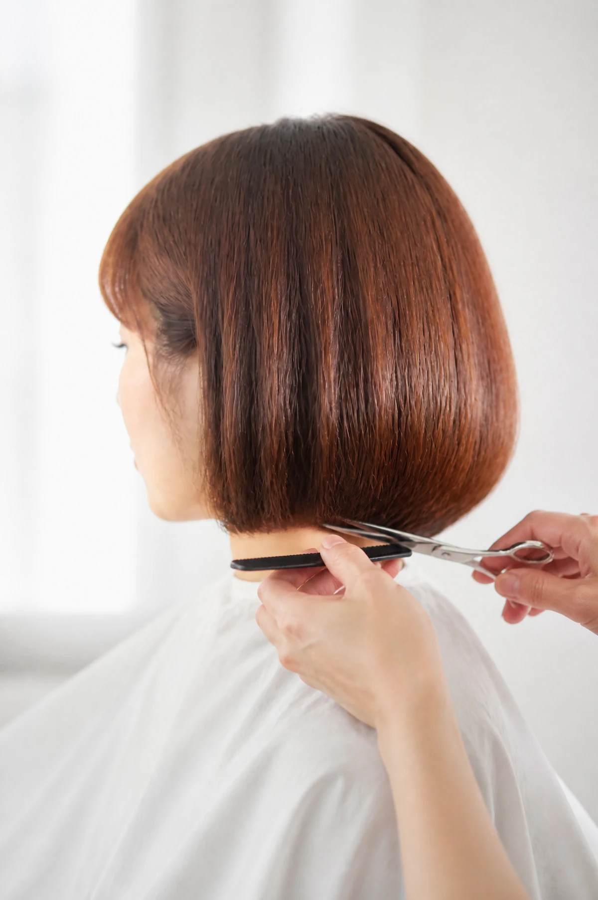
Corte
Primero se mira cómo cae el pelo y luego se corta. Tijera, sin máquina, y un acabado que crece bien.
desde 28 €Peluquería · Pamplona
Corte, color y peinado sin prisa, en una peluquería pequeña donde se atiende a una persona a la vez.
Reserva tu cita01
Entras con el pelo de siempre. Sales con el corte que tenías pendiente y una hora que ha sido solo tuya.
Lo que hacemos

Primero se mira cómo cae el pelo y luego se corta. Tijera, sin máquina, y un acabado que crece bien.
desde 28 €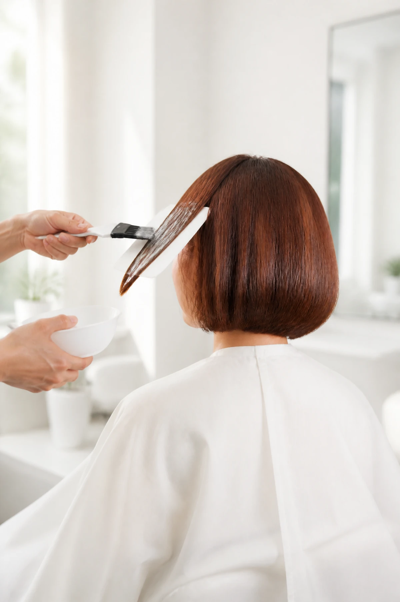
Tonos que parecen tuyos. Raíz, baño de color o un balayage que no pide retoque cada mes.
desde 45 €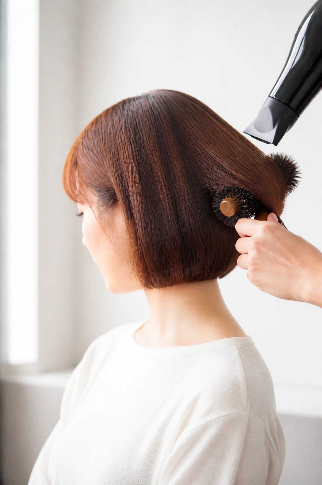
Secado con cepillo, ondas o liso. Para un día cualquiera o para una boda, sin que parezca de boda.
desde 20 €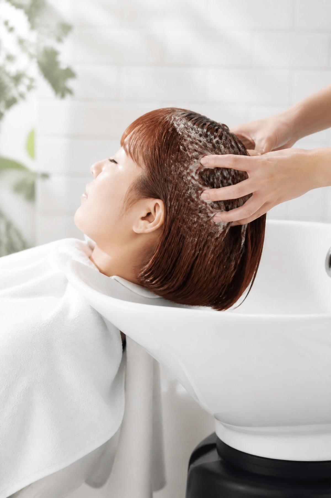
Hidratación y brillo en el lavacabezas, con masaje del cuero cabelludo. Para el pelo cansado del verano o del tinte.
desde 18 €El espacio
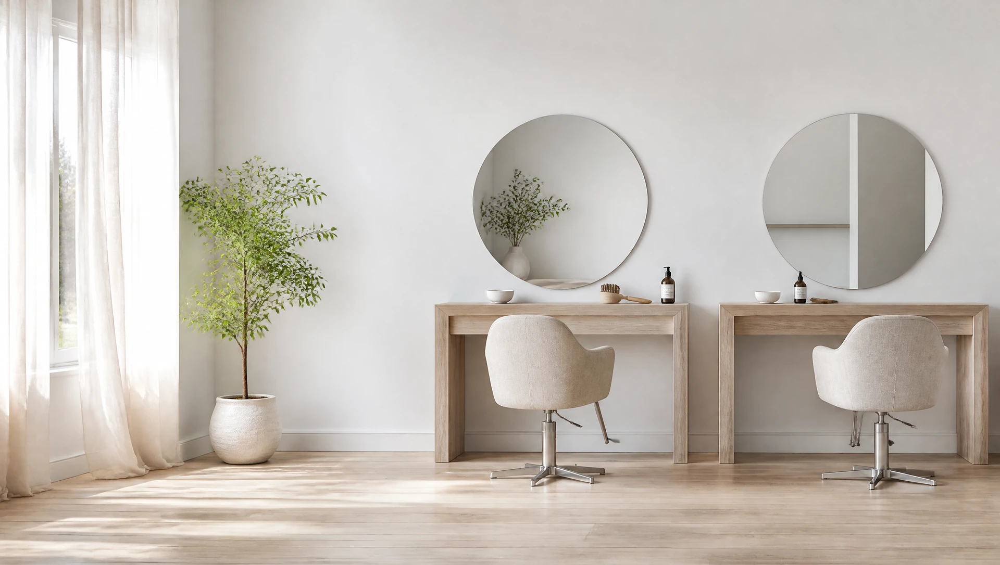
Dos tocadores con espejo redondo junto a una ventana grande. La luz con la que te miras es la misma con la que vas a salir a la calle.
Dos sillas y nunca las dos ocupadas. Sin música a volumen de bar ni secadores cruzados. Puedes hablar o no hacerlo.
Color sin amoniaco, toallas limpias para cada persona y un lavado con masaje que no mira el reloj.
Cortes que crecen bien
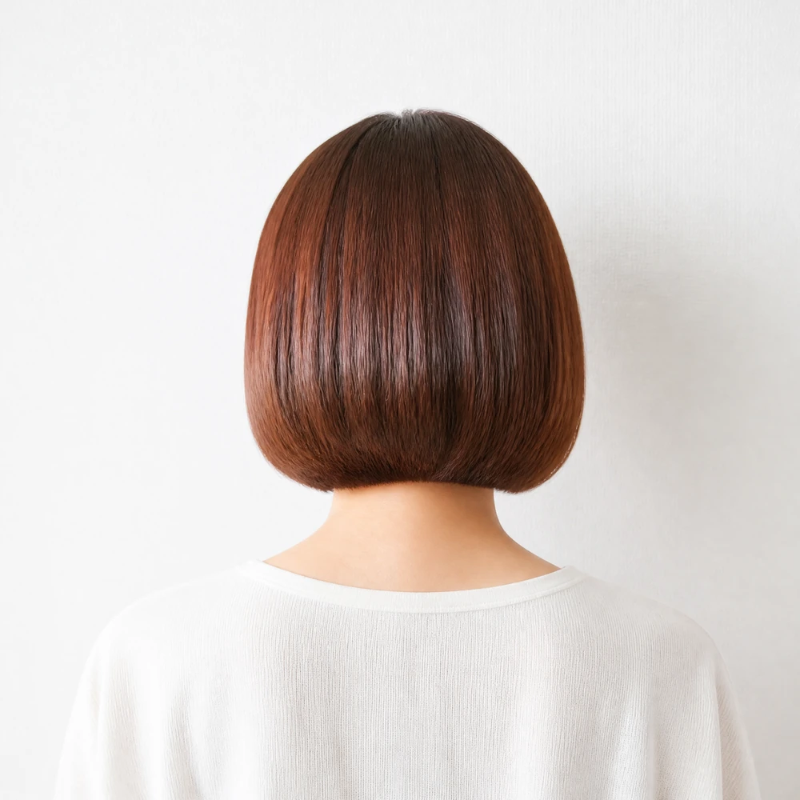
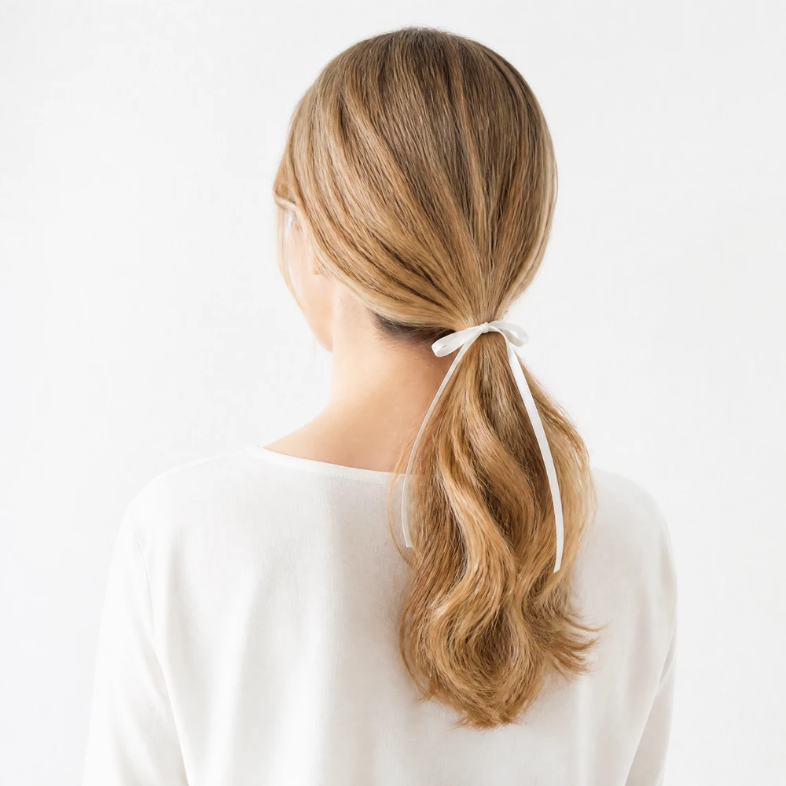
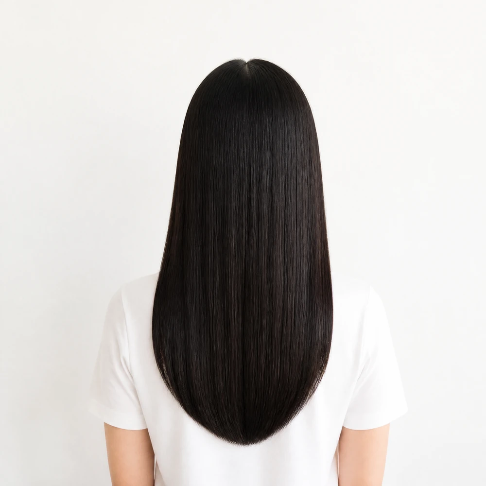
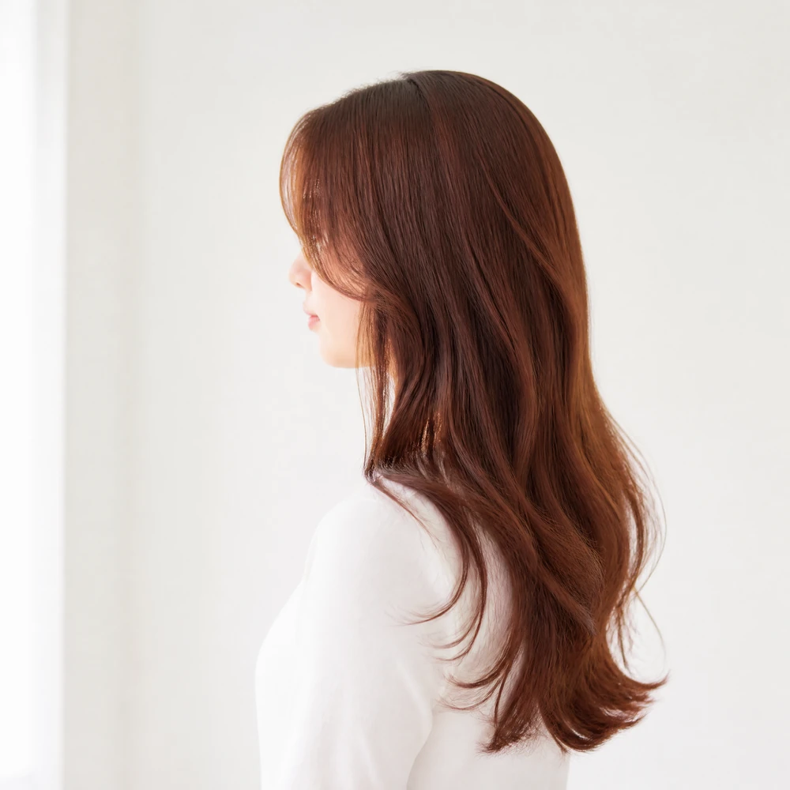
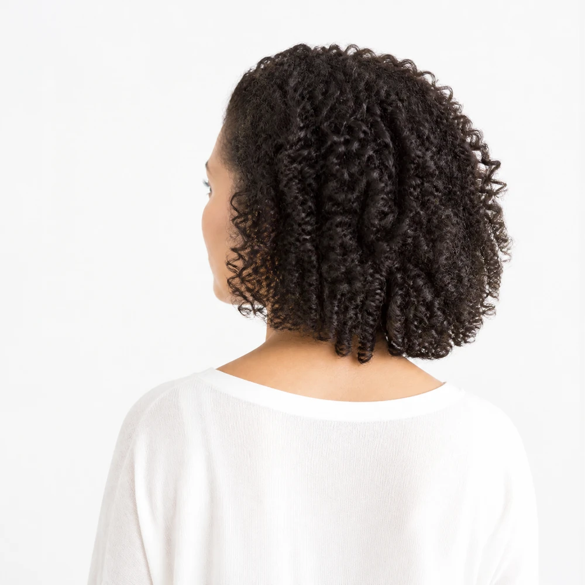
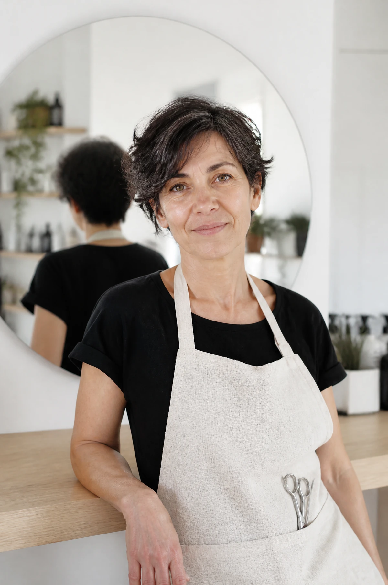
El buen corte se nota a las tres semanas.
Detrás de Hebra
Veinte años de tijera, los últimos ocho en este local de la Rochapea. Aprendió en Madrid, volvió a Pamplona y abrió Hebra con una idea: un corte que crece bien vale más que uno que solo luce el primer día.
Trabaja con cita y nunca con dos personas a la vez. Por eso aquí nadie espera con el tinte puesto.
Es la primera peluquería de la que salgo con el corte que pedí y no con el que le apetecía a la peluquera.Maite, clienta desde 2023
El color me dura y no me ha quemado el pelo. El masaje del lavado vale la cita entera.Ainhoa, clienta desde 2024
Fui por un corte antes de una entrevista y ahora voy cada seis semanas.Sara, clienta desde 2025
Escríbenos por WhatsApp y te decimos hueco en la semana. Sin registros ni aplicaciones.
Escribir por WhatsApp Hebra · Calle de la Rochapea, 00 · Pamplona · 600 000 000